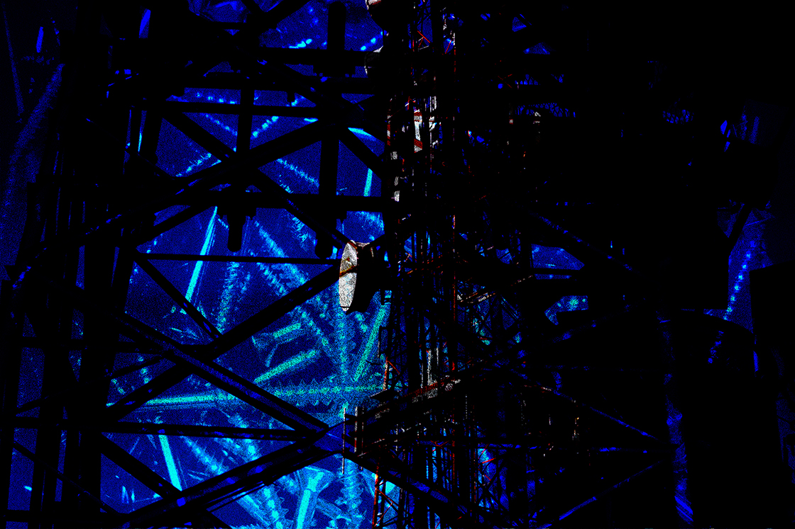

Songs Living Within Me
DSLR Camera, Photoshop
2025
Songs Living Within Me is a photography and collage project aiming to visually represent how my favorite songs make me feel.
It was a fun challenge figuring out how to translate my immaterial emotions into photos I can take to then edit to enhance the message. This was my first photography project, so I got to learn more in detail about how to use a camera and photo editing.
When listening to this song, I imagine an immense abandoned metal structure, standing still in the night. Brave are those who dare to approach it.

Sweetness and Light - Lush
If this song was an action, it would be watching the sky, clouds and stars, admiring the vastness of the universe. It feels like light itself, so I used shiny objects to represent its beauty.

Loafofyarn - smush
This song is like feeling better after hugging a close friend. Its slight melancholic tone reminds me of taking walks during the winter.

Leach - Cryogeyser
Oomingmak - Cocteau twins
For this very ethereal song, I chose to use photos from my trip to Gaspesie, since they evoked the same sense of beauty as the song. The orange and grainy look make it warm and fuzzy, which reflects the feelings of comfort brought by the song.
Purepurepure - Her New Knife
A sad song which often triggers introspection. Reminds me of sitting by the water at night, watching it flow.